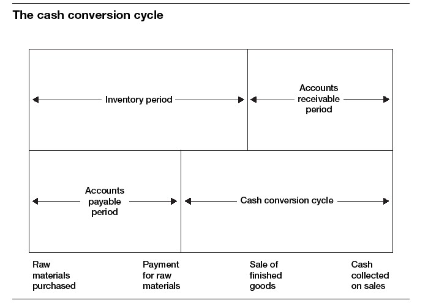
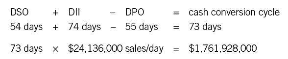

Homing In on Cash Conversion
In this chapter we’ll take up the cash conversion cycle, which measures how effective a company is at collecting its cash. But there’s one little wrinkle we have to consider first—how fast a company decides to pay the money it owes its vendors.
Accounts payable is a tough number to get right. It’s an area where finance meets philosophy. Financial considerations alone would encourage managers to maximize days payable outstanding (DPO), thus conserving the company’s cash. A change in this ratio is as powerful as a change in the other ratios we’ve been discussing. In our sample company, for instance, increasing DPO by just one day would add about $19 million to the company’s cash balance.
Companies do often use DPO as a tool to increase cash flow and reduce the amount of working capital tied up in the business. During the financial crisis that began in 2008 and the subsequent recession, for instance, many corporations increased their DPO as a strategy to conserve cash. In fact, one Fortune 50 company actually told suppliers it would pay them in 120 days.
But is this a good strategy for ordinary times? Or for companies that are not part of the Fortune 50? The strategy carries residual costs that are hard to assess. Sure, the finance team can measure how much cash is generated by increasing DPO from sixty days to seventy. For a large company, that can be a significant amount. But what about the “soft” costs? A company that delays payments may put a key supplier out of business. It may find that suppliers are raising their prices to cover the cost of the additional financing they must line up. It may face slower delivery times and even lower quality—after all, the suppliers are likely to feel squeezed and will have to cope as best they can. Some suppliers may even decline the company’s business. Another practical consideration is the company’s Dun & Bradstreet rating. D&B bases its scores, in part, on a company’s payment history. An organization that consistently pays late may find that it has trouble later on getting a loan.
A personal story illustrates the point. In the early days of Joe’s manufacturing company, Setpoint, the company’s founders told him that “net 30” meant just that: net 30. Setpoint would always pay its suppliers in thirty days. The founders had previously worked for a struggling company that routinely delayed its payables to one hundred days or more. As engineers, they were often unable to get parts for critical projects until the suppliers were paid. That delayed the projects and thus delayed revenue payments based on project completion, creating a downward spiral. Because of their experience, Setpoint’s founders decided never to be in that position with their own business.
The policy created a problem for Joe, because Setpoint’s primary customer at the time, a large corporation, paid in forty-five to sixty days. So Joe took one of the founders to the bank to discuss a credit line. He showed the banker how much cash they were likely to need. The banker responded, “I don’t know why you need this line. Just delay paying your suppliers by twenty days and you will be fine.”
The founder spoke firmly but quietly. “If I delay paying my suppliers, are they going to provide me with quality product on time? I need suppliers I can trust. That’s what the business depends on. If I delay paying them by twenty days, what will that do to my relationship with them?”
The young banker just stared. Finally he agreed to look into a credit line for Setpoint. Setpoint eventually got the line, and for nearly twenty years, with few exceptions, has stayed at net 30 with its suppliers. The policy has cost the company money because it raises working capital requirements. But while it puts constraints on cash flow, Setpoint’s leaders believe that it positively affects the company’s reputation and relationship with its vendors—and in the long term helps to build a stronger community of businesses around the company.
We won’t go into any more detail about payables policies, because in most companies nonfinancial managers don’t have much direct impact on how fast the company pays its bills. But in general, if you notice that your company’s DPO is climbing—and particularly if it is higher than your DSO—you might want to ask the finance folks a few questions. After all, your work probably depends on good relationships with vendors, and—like Setpoint’s founders—you don’t want finance to mess up those relationships unnecessarily.
THE CASH CONVERSION CYCLE
Another way to understand working capital is to study the cash conversion cycle. It’s essentially a timeline relating the stages of production (the operating cycle) to the company’s investment in working capital. The timeline has three levels, and you can see how the levels are linked in figure 30-1. Understanding these three levels and their measures provides a powerful way of understanding the business. It should help you make good decisions.
Starting at the left, the company purchases raw materials. That begins the accounts payable period and the inventory period. In the next phase, the company has to pay for those raw materials. That begins the cash conversion cycle itself—the cash has now been paid out, and the job is to see how fast it can come back. Yet the company is still in its inventory period; it hasn’t actually sold any finished goods yet.
Eventually, the company does sell its finished goods, ending the inventory period. But it is just entering the accounts receivable period; it still hasn’t received any cash. Finally, it does collect the cash on its sales, which ends both the accounts receivable period and the cash conversion cycle.
Why is all of this important? Because we can use it to determine how many days all this takes and then understand how many days a company’s cash is tied up. That’s an important number for managers and leaders to know. Armed with the information, managers can potentially find ways to “save” lots of cash for their company. To figure it out, use the following formula:
FIGURE 30-1

In other words, take days sales outstanding, add days in inventory, and subtract the number of days payable outstanding. That tells you, in days, how fast the company recovers its cash, from the moment it pays its payables to the moment it collects its receivables.
The cash conversion cycle gives you a way of calculating how much cash it takes to finance the business: you just take sales per day and multiply it by the number of days in the cash conversion cycle. Here are the calculations for our sample company:

This business requires working capital of around $1.8 billion just to finance its operations. That isn’t unusual for a large corporation. Even small companies require a lot of working capital relative to their sales if their cash conversion cycle is as long as sixty days. Companies of any size can get themselves into trouble on this score. Tyco International—mentioned earlier in this book—was famous for acquiring six hundred companies in two years. All those acquisitions entailed a lot of challenges, but one serious one involved huge increases in the cash conversion cycle. The reason? Tyco often was acquiring companies in the same industry, and competing products were added to its product list. Now that Tyco had several very similar products in inventory, the inventory didn’t move as fast as it once had—and inventory days began to spiral out of control, increasing in some parts of the business by more than ten days. In a multinational company with more than $30 billion in revenue, increases on that scale can deplete cash by several hundred million dollars! (This is an issue that Tyco has long since addressed by closing down the acquisition pipeline and focusing on the operations of the business.)
The cash conversion cycle can be shortened by all the techniques discussed in this part: decreasing DSO, decreasing inventory, and increasing DPO. Find out what your company’s cycle is and which direction it’s heading in. You may want to discuss it with the folks in finance. Who knows? They might even be impressed that you know what it is and what levers can affect it. More important, you might start a conversation that will result in a faster cash conversion cycle, lower working capital requirements, and more free cash. That will benefit everybody in the business.